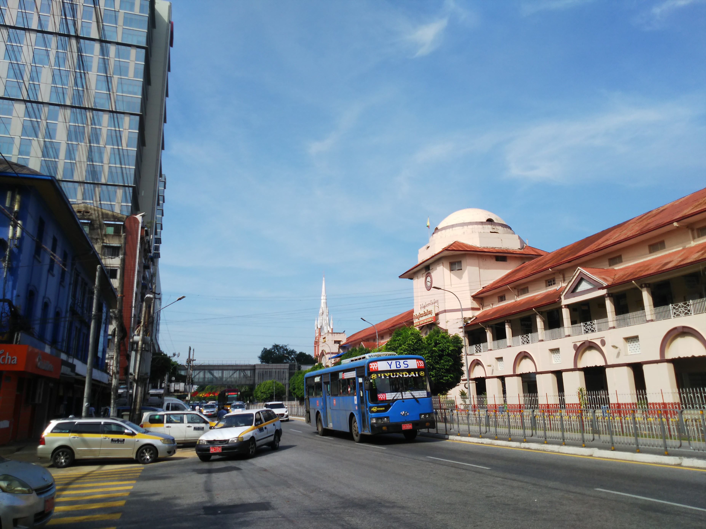

さぁ、いよいよ一人海外の復活です。もー好きにします（?ラジオ大阪）。
拘束の可能性もよぎりながらの少々ビビリながらの出発です。
やはり久々の一人海外は、初海外と同様、船旅とい
きます。
んなわけないか。
神戸市民なので、ベシャトルで関空へ向かいます。
この船自体は早いんですが、便が少なく、ここ神戸
空港の乗り場にたどり着くまで乗換も多いので、速
さでいけば結局電車と変わらんかったかな。
よー揺れました。
ショッピングセンターかと見まがうばかりの関空の
出国エリアを抜けて、いよいよ搭乗です。
今回は安さ勝負で航空会社を選びました。中国東方
航空の上海経由のバンコク行。
といいつつ、上海からはＬＣＣ子会社の上海航空で
す。
さすがフラッグ・キャリアの東方航空！今まで食べ
た外国航空の中で一番おいしい機内食でした。
まぁ大阪で調理してるんやから当然か・・・
上海浦さん、いや浦東空港の乗り継ぎ。広いけど活
気のない空港でした。
狭苦しいＬＣＣで離陸。
わかりにくいですが、左上のあたりに有名な東方明
珠電視塔が見えてます。鉄道駅も見えました。
隣が日本人の男二人組で、ずっとしゃべっててうる
さくてキレそうでした。
我慢我慢。
バンコクに無事到着。狭いＬＣＣでの長時間移動は
苦痛でした。日頃から青春１８で乗り続けることに
親しんでたので、なんとか乗り切りました。
しかし、このあともう１本、飛行機に乗って目的地
には２２：３０ぐらいにつきました。さすがにフラ
フラ。
翌朝。ホテルの部屋から見る日の出です。
そう、ミャンマーはヤンゴンまでやってきました。
ホテルから見たヤンゴン。昨夜は夜遅く着いたので
どんな感じの街か全然わかりませんでした。
が、有名なシュエダゴン・パゴダが黄金色に輝いて
いたのはとても綺麗でした。
さて、早速困ったのが両替。昨日到着した空港は両替するところが
閉まってて、今日は早朝から動き出すのでミャンマーチャットの現
金がないと困るんです。
泊まったホテルでで出来るかと思ったけど無理で、市内の大きめの
ホテルでチャレンジしようとするも、クーデターの影響でホテル自
体が閉まってたりして大ピンチ！
ホテルのロビーで困っているのを察してくれたガードマンが道でた
まってたタクシーの運ちゃんに話をつけてくれて、なんとかドルを
チャットに替えることができました！レートも全然悪くなく、感謝
感謝です。
さっそくヤンゴン中央駅に向います。
表口と裏口を間違えてしまって裏口側にきてしまい
ました。

陸橋を越えて表口のほうに行こうとすると・・・お〜おったおった
ＪＲ東海や！
しかし手前の新しい車両が気になるなぁ。
これがヤンゴン中央駅。
ここから、国鉄の環状線に乗るのがヤンゴンまでやってきた目的で
す。
日本の援助で近代化が進められていて、本当は勤続３０年のリフレ
ッシュ休暇で来たかったのですが、コロナ禍で断念。そしてクーデ
ター・・・。
その代わり、クーデターのせいで近代化の工事は止まったようで、
まだ昔ながらの光景が残ってるはずなんです。
しかしなんか客が見当たらんなぁ・・・。軍人が多いのもクーデタ
ーの影響か？と思ってたら・・・
軍人が寄ってきて、今日は乗れんから出ろ！と言うてきよった。
いろいろ聞いていくと、なんと明日からさっき見た新型車両での運
行が開始で、今日はえらいさんの試乗とかでネピドーから要人が来
るので全線で運休！
何しにここまで来たんじゃ〜！！昨日が旧型の最終運行日やったと
のこと。
しょうがないので、中央駅から数駅離れた駅にタクシーで向かいま
した。
なんとか行先、運ちゃんに通じましたわ。
着いてみると、静かでええ駅でした。
もしやと思って駅員に聞いてみましたが、やっぱり運休やて・・・
こっそりホームに入ります。注意されるかと思ったけど、特におとがめも
なく・・・
これがヤンゴン近郊の路線図です。空港もこの環状の内側にあります。
※この駅、中央駅が天王寺やとしたら、今宮ぐらいの位置関係です
ちょっと駅前をぶらついてみます。
緑の多い町ですね。ちょっとした食べ物屋が多いです。

見てると、地元の人は平気で線路を道替わりに横切ったり歩いたりしてるので、私もぶらぶら構内に入ってみました。
気温もちょうどよく、心地いい時間でした。
日本でいうところの地蔵みたいなもんか？
駅の反対側は幹線道路で、駅前ののどかさとは対照的でした。
また駅の入り口側に戻ってぶらぶらします。
ずっといてられる感じの駅でしたが、時間もないので最後にもう一度構内をうろついて中心街にもどることにします。
駅裏の幹線道路にバスがたくさん走ってたので、バスで戻ることに
します。
バス停で待ってる人に料金聞いたら、親切にも乗る系統の番号教え
てくれて、小銭あるかと聞かれてうまく返されずにいると小銭まで
くれようとしました。なんて優しいんや、ヤンゴンの人！
※もちろん、もらってませんよ。両替しようという意味で大き目の
お札を渡したら、交換になって損しました。
このあたりが昔からある市場のあたりです。

右の建物が植民地時代からある市場の建物で、左の高いビルは今ど
きのショッピングセンターでした。
古い市場の中です。まだ開店で閑散としてました。土産物屋も多かったです。
中心部をヤンゴン川に向ってぶらぶらします。
こんな感じの屋台がたくさんあります。
中心部は、ブロックごとに同じ業種の店が集まってる感じでした。
車は多いですが、バイクは少なく、よくある騒音だらけのアジアの街という感じではないっすね。
★ ★ 続 く ★ ★